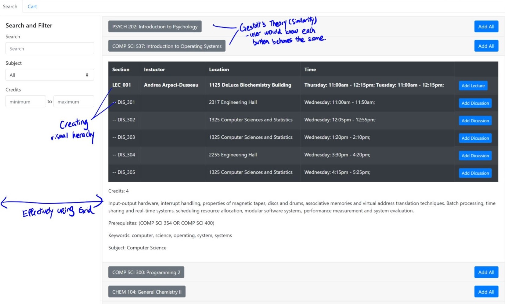
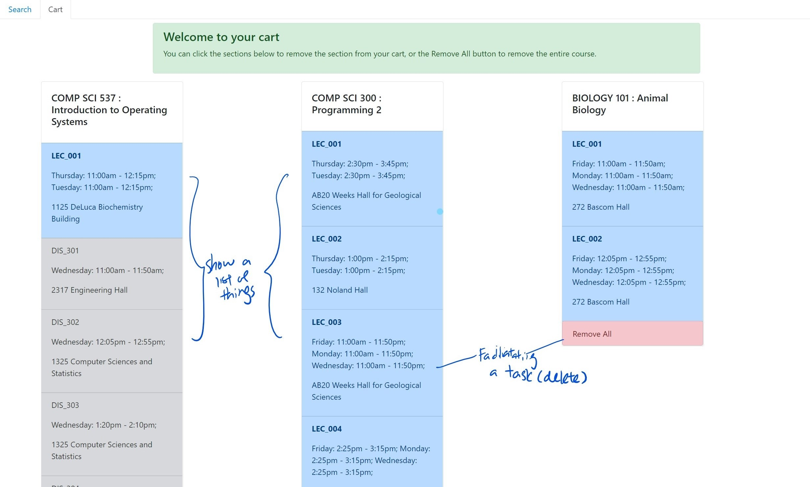
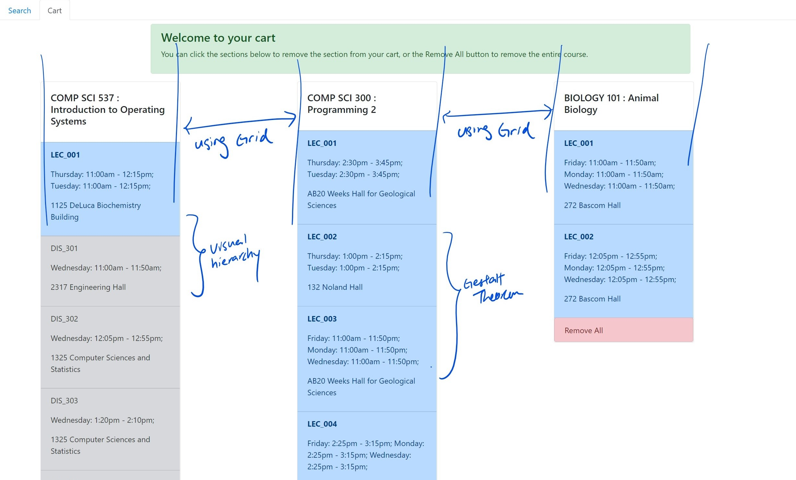
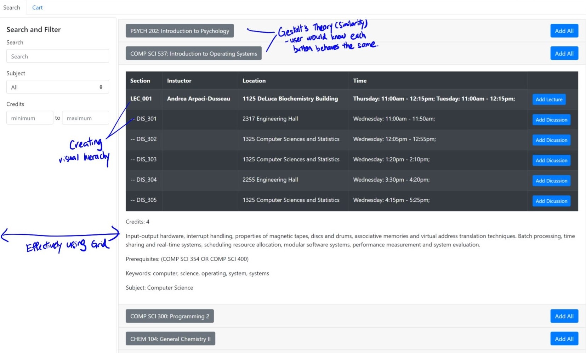
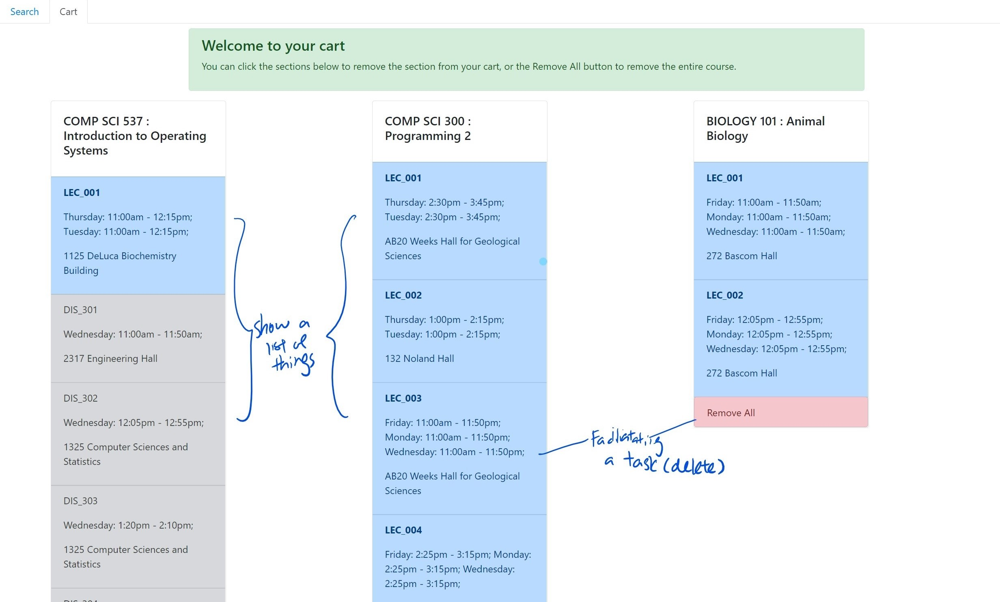
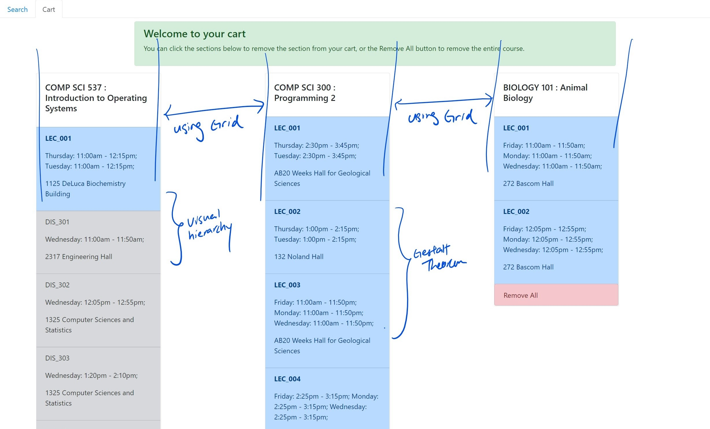
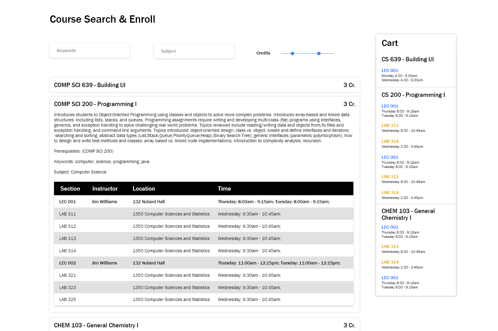
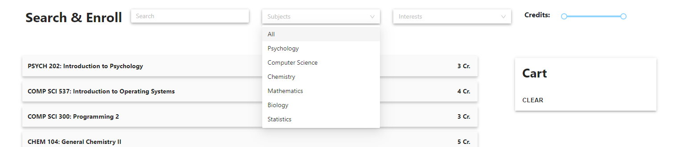

Overview
The goal of this project is to learn React.JS and apply UX theories to create an interface with fairly good usability. My role is to fetch the data from the API provided and dynamically generate React components. Besides, I learned conventional layout structures to design the preliminary version of the application. I later employed Hueristic Evaluation to improve the usability of the application. This article will focus on the UX design aspect of the project.
The final version of the application can be accessed here.
Preliminary design
The preliminary design was created while coding the React components of the web app. This design is meant to be temporary and was expected to be changed once the engineering aspect of the website is completed.
I analyzed the structural and naviagational layout of the preliminary design to gain a further understanding of my design, and how the design can be further improved.
 





The navigational structural identified:

The results:
The screenshot above is a high fidelity mock up using Adobe XD.
What is improved in this redesign? Let's reanalyze our design


The biggest improvement is the reduction in context switches. Instead of a tabbed design, I overhauled the design to a SPA to reduce context switch required to glance through information crucial to the users.
I proceed to implementing the design change on React before the next iteration design phase.
Iteration: Improving usability through Hueristic Evaluation
Usability is a very important aspect of UX. It helps ensure the effectiveness of and users' satisfaction of the design solutions. I used Hueristic Evaluation to evaluate my design solution and offer severity ratings and design recommendations for each of the violations I have identified.
1. Identify a focus
In this part, I will be focusing the following components as part of the hueristic evaluation process.
a. Search bar

b. Course accordion
c. Cart
2. Identify violations
I evaluate each components with the 10 huersitics and assign a severity rating on the scale of 0-4 (grey, green, yellow, orange, red). Cyan represents the hueristic that's already present in the current implementation.
| Hueristic | Search and Filter | Sections Accordion | Cart |
|---|---|---|---|
| Visibility of system status | User can see changes immediately after applying filters | 1. No hints to notify user courses are successfully added | Users can see changes immediately after removing |
| Match between real world & system | |||
| User control & freedom | 2. No undo button if user accidentally remove from cart. | ||
| Consistency & standards | Unified design language implemented across the application | Unified design language implemented across the application | Unified design language implemented across the application |
| Error prevention | 3. Still allow user to add courses that did not meet pre-req to cart | ||
| Recognition rather than recall | 4. Users have to retype search word every time they use the platform. | 5. Courses added to card are not saved | |
| Flexibility & efficiency of use | |||
| Aesthetic & minimalist design | Minimalistic design with shadows as affordance of clickable content | Highlight when mouse hover over sections as affordance of clickable | Minimalistic design with shadows as affordance of clickable content |
| Help users with errors | 6. If search result returns empty or credits go out of bound, no error message | ||
| Help & documentation | 7. None provided, user might get confused to use platform | 8. Users might get confused on their possible action | 9. Users might get confused on their possible action |
3. Develop Design Recommendations
For each violations identified above, I provide one design recommendations that could be implemented and evaluate whether they are feasable to be implemented with the constraints of the API.
| # | Recommendation | Feasability |
|---|---|---|
| 3 | Add notifications to notify users pre-req not met | Yes |
| 6 | Add icons to notify users on result returning none | Yes |
| 1 | Add notification to notify users courses are successfully added | Yes |
| 2 | Add an undo button allowing users to revert the last changes made | Yes |
| 5 | Remember choices added to cart by users | No. Require a change in API. |
| 4 | Remember choice made by users on filters | No. Require a change in API. |
| 7 | Add support and documentations | Yes |
4. Implementation
From the results above, I chose 3 of the recommendations I have suggested above to implement.
a. Prompt notifications on course successfully added to the cart

b. Prompt notifications when user added a course in which they did not meet the pre-requisites required

c. Error message to notify users on no course associated with the search results
Conclusion & Reflections
Through this process, my design has become more user friendly. The user can now understand more on what has happened – Notifications to notify
users when a course is added to the cart and when users added a course that they did not meet pre-req of to the cart.
An error message is also shown on screen when users’ filter yield no results. With this it might be less confusing for
novice users to navigate around the user interface to perform the task they intended. Overall, it allowed the user to better
understand their actions and what can and cannot be done.
I found out that the hueristic approach really guided me to finding ways to improve on my design. These guides create a comprehensive outlook for
system designers to make sure they are no blind spots that they might have missed.
Once again, the final version of the application can be accessed here.